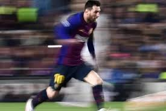

Tentang Saya

Saya mengawali kehidupan saya selepas sekolah (SMK). Pada saat itu saya berusia 17thn dan saya gagal masuk kuliah, Untuk saat itu saya mencoba mencari kerja dan pada ahirnya saya memutuskan untuk gap year. pada tahun berikutnya saya sudah berusia 19thn. Di usia saya yang sudah tidak muda lagi dan saya gagal untuk yang ke sekian kalinya untuk mencapai tujuan saya (kuliah). Pada ahirnya di tahun berikutnya di usia saya yang sudah 20thn perjalanan yang di bilang tergolong lama ahirnya saya kuliah di pens. Sudah jadi misi saya untuk menunjukkannya lebih banyak kepada dunia.
Hobi
Saya memiliki hobi bermain sepak bola dan yaa saya mempunyai idola sebut saja lionel messi. Dari permainan yang di mainkan messi seorang attacker yang menguasai permainan dan waktu dia menggiring bola, passing bola, melewati lawan dengan mudah. dan dia menciptakan sebuah permainan sang maestro.
Music
.png)
Amapiano Salah satu favorit saya suka mendengarkan musik bertema amapiano. Dari musik ini kita bisa menikmatinya dengan bpm yang lumayan kencang dan gerakan gerakan yang bervariasi.
Pengalaman
Pengalaman
Kitchen cook
2021 - 2023,
Rent car
2017-sekarang, Waru sidoarjo.
Pendidikan
SMKN 1 SURABAYA
2019-2021, Rekayasa Perangkat Lunak,
Gab year
2022.
Hubungi Saya
Email:
alfinrizqullah0888@gmail.com
083852036745
HOME:
PADMOSUSASTRO 98
IG
@rizqullahafin